ARDUINO - ANALOG AND DIGITAL INPUTS AND OUTPUTS
This week I will be walking through a number of Arduino projects that look at analog and digital inputs and outputs, or IO. Arduinos have both analog and digital pins that can send or receive either analog or digital data. The difference between analog and digital IO, is that digital data can have one of two values, on or off. Analog data can have a range of values that go up and down in a sequence.
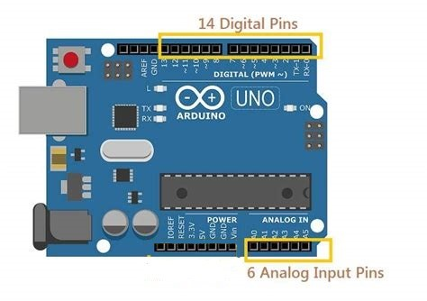
An Arduino has pins for analog IO, and digital IO, It also has digital pins that can act like analog pins, these are the digital pins with ~pwm next to them, pwm stands for pulse width modulation.
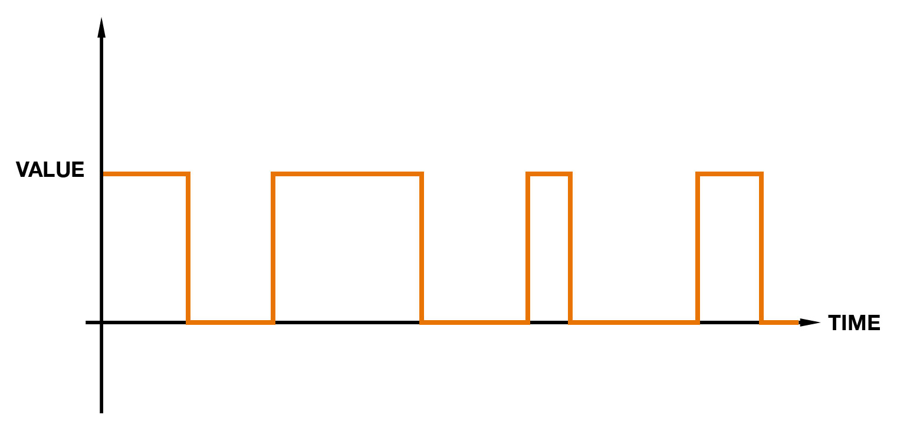
Digital IO can have one of two values, on or off, which is often represented as 1 for on and 0 for off. This means on a digital pin the input or output is either on or off. An example of this is the button, it has two states, pressed or unpressed, so it is a digital input, 1 for pressed, 0 for unpressed.
 Analog IO has a range of values that go up and down in sequence. If you are supplying 5 volts, which we have been using the power through the UBS, then the analog input or output can be between 0 and 1023. An example of this is the potentiometer, or pot, as it turns it can have a range of input values. So, its value could be for example 5, 126.3 or 450.6
Analog IO has a range of values that go up and down in sequence. If you are supplying 5 volts, which we have been using the power through the UBS, then the analog input or output can be between 0 and 1023. An example of this is the potentiometer, or pot, as it turns it can have a range of input values. So, its value could be for example 5, 126.3 or 450.6
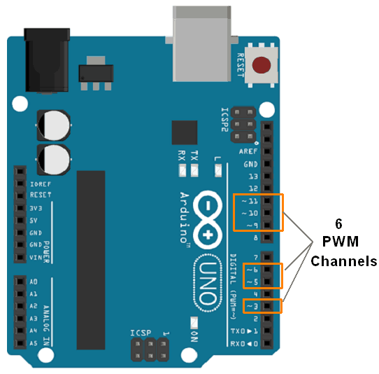
You might have notices tilda by some of the digital pin numbers and the text Digital tilda pwm on the baord. PWM and this stands for pulse width modulator, which is a way to simulate an analog signal through a digital pin. The digital pins with ~pwm are the pins that can do that. An LED is a digital component, it is either on or off, but with pulse width modulcaiton you can simulate it being analog. Pulse width modulation can be used for a number of components including and LED, servos’a and motors
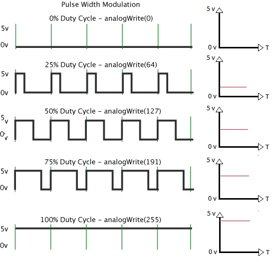
Pulse Width Modulation works by simulating an analog input on a digital pin.
In PWM technique, a square wave is switched between on and off state. By changing the time the signal spends on “on” state versus the time the signal spends on “off” state, we can simulate a range of voltages between 0V and 5V. When this switching between on and off state is very fast, then the result is as if the output signal is at a stable voltage level between 0V and 5V.
The ratio of the time for which the signal stays in HIGH state (on time) to that of the total time period of the signal (on time + off time) is what is important, and this is called the duty cycle.
There are more videos that go through using analog data, digital data, pulse width modulation and mixing analog and pulse width modulation data.
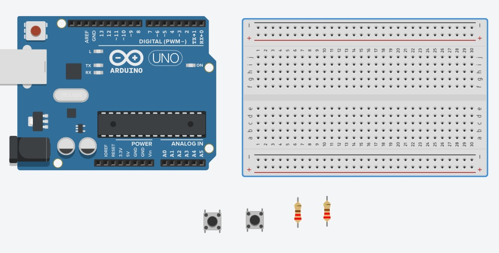
For this you will need two buttons, two 220-ohm resistors and 6 jump leads.
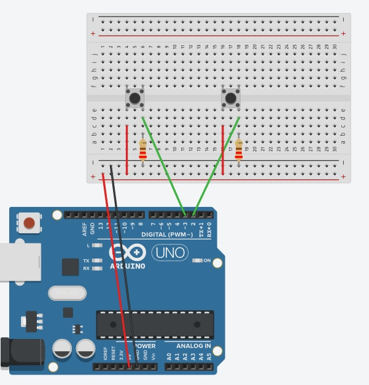
The buttons are quite big so you can connect them across the center line of the breadboard
The resisters go from the negative strip of the breadboard to one leg of the button.
On the same line of the button, put a jump lead that for one button goes to digital pin 2 of the Arduino and one to digital pin 3
Put a jump lead each from the other leg of the button to the positive strip of the breadboard
Put a jump lead from the positive strip of the breadboard to the 5V pin on the Arduino
Put a jump lead form the negative strip of the breadboard to the ground pin on the Arduino
This is the set up for the buttons, each is attached to a different digital pin on the Arduino.
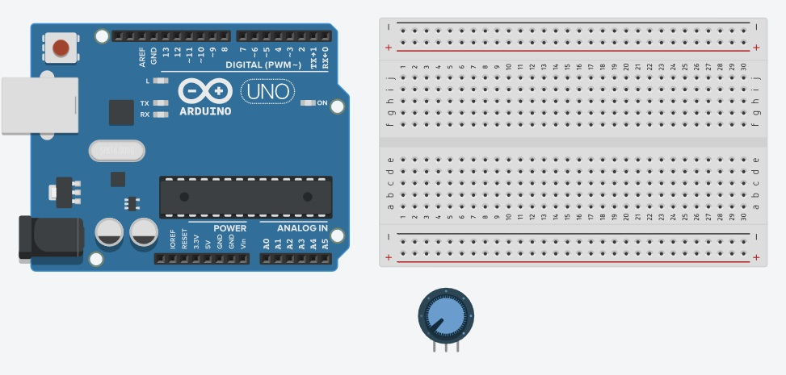
For this you will just need a potentiometer and 5 jump leads. Depending on your potentiometer you might need to put it together, but they should look roughly like this.
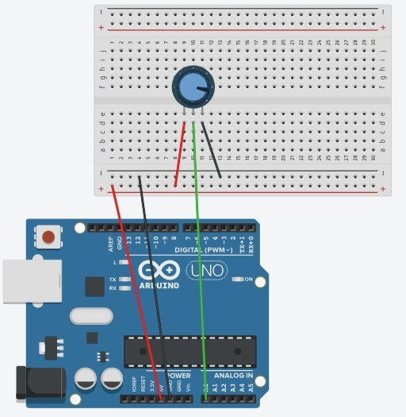
Create a new sketch in the Arduino IDE, I called it analog.ino
Create two int variables at the top of the code, one for the analog pin number, the other for the value coming from the potentiometer
In set up use the Serial.begin function to set the baud rate, this will match the baud rate in the IDE’s serial monitor
In the loop use the analogValue variable to hold the result of calling the funciton analogRead. The argument in this is the analog pin number
Then use the Serial.println function to print out the data from the potentiometer
There is a short delay so it's easier to see the data
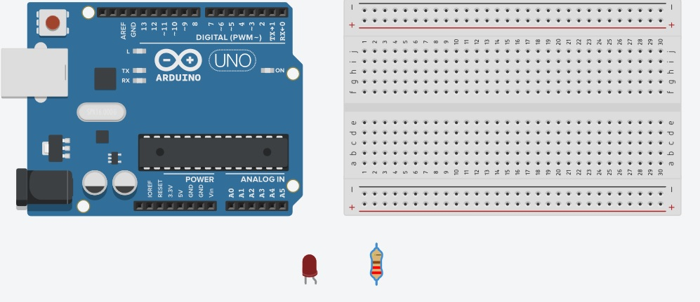
For this you will need an LED, a 220-ohm resistor and 4 jump leads. TinkerCad is slightly wrong as it wouldn’t let me shorten the resistor, the jump lead and resistor should be put in separate holes in the breadboard.
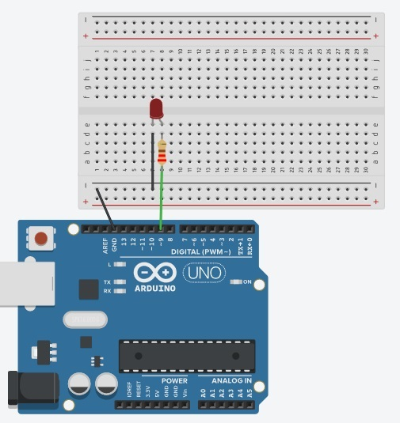
You put the LED in the breadboard, and then attach the resistor to the positive longer leg, the anode.
You then connect a resistor to that leg, leaving one whole for a jump lead
You attached a jump lead in the same line on the breadboard as the resistor and the LED anode leg
Attach the other end of the jump lead to pin 9 on your Arduino, pin 9 has a tilda next to it
Connect the negative leg, the cathode, of the LED to ground, first with a jump lead to the negative strip on the breadboard, and then take another jump lead from this to a ground pin on the Arduino.
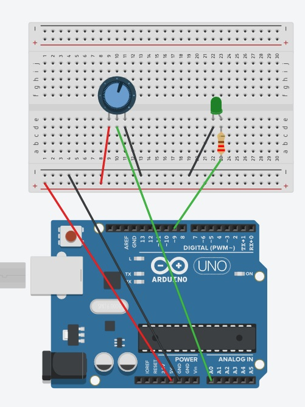
You can continue with the set up from the last video and add an LED again as I couldn’t shrink the resistor in tinkercad it looks like the resistor and jumplead are in the same hole on the breadboard, but they are in different holes
The resistor is on the same line as the positive, longer leg of the LED, as is a jump lead going to digital pin 9, which is an PWM pin
The shorter, negative leg of the LED is connected to the minus strip on the breadboard